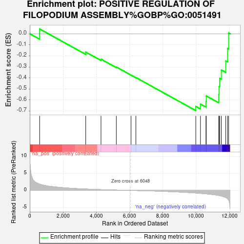
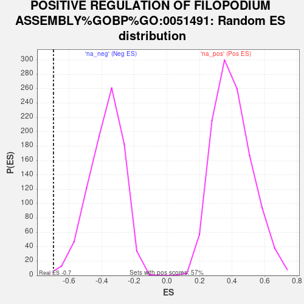

| Dataset | NHBE_SARSCoV2_ranks |
| Phenotype | NoPhenotypeAvailable |
| Upregulated in class | na_neg |
| GeneSet | POSITIVE REGULATION OF FILOPODIUM ASSEMBLY%GOBP%GO:0051491 |
| Enrichment Score (ES) | -0.6960093 |
| Normalized Enrichment Score (NES) | -1.8595227 |
| Nominal p-value | 0.0023337223 |
| FDR q-value | 0.24591415 |
| FWER p-Value | 0.8455 |

| SYMBOL | RANK IN GENE LIST | RANK METRIC SCORE | RUNNING ES | CORE ENRICHMENT | |
|---|---|---|---|---|---|
| 1 | TENM2 | 593 | 1.846 | 0.0433 | No |
| 2 | ARAP1 | 3363 | 0.417 | -0.1661 | No |
| 3 | MIEN1 | 4281 | 0.244 | -0.2301 | No |
| 4 | FSCN1 | 5200 | 0.108 | -0.3010 | No |
| 5 | RALA | 6084 | -0.004 | -0.3743 | No |
| 6 | WASL | 6377 | -0.040 | -0.3966 | No |
| 7 | CDC42 | 9978 | -0.768 | -0.6575 | Yes |
| 8 | DOCK11 | 10258 | -0.877 | -0.6367 | Yes |
| 9 | FNBP1L | 10589 | -1.014 | -0.6132 | Yes |
| 10 | DPYSL3 | 10608 | -1.023 | -0.5634 | Yes |
| 11 | PALM | 11357 | -1.483 | -0.5512 | Yes |
| 12 | FMR1 | 11375 | -1.500 | -0.4774 | Yes |
| 13 | MYO3B | 11413 | -1.538 | -0.4033 | Yes |
| 14 | RHOQ | 11515 | -1.654 | -0.3286 | Yes |
| 15 | PIK3R1 | 11778 | -2.074 | -0.2463 | Yes |
| 16 | TGFB3 | 11889 | -2.439 | -0.1330 | Yes |
| 17 | NRP1 | 11954 | -2.896 | 0.0070 | Yes |
